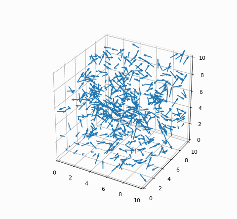

Problem extension to the 3D space
Following the analysis of swarming in a 2D space, we might be interested in exploring a more realistic scenario, a 3D space. Here is a frame of the simulation:
In three dimensions the computation gets more complicated as we have to introduce a second angle to define any points. In a spherical coordinate system we will have a polar angle theta along with an azimuthal angle phi therefore double calculations will be worked out. Beside introducing a new angle, the code conversion from 2 to 3 dimensions is then quite straightforward. Just like before, even if treated separately, the average angles are obtained by summing all the neighboring vectors’ polar and azimuthal angles respectively, and then by applying Numpy’s arctan2 to return them in the correct quadrant. The scratch code without optimization looks as follows:
{kind=link}
Figure 9: Code snippet to be optimized in 3D space.
Just like before, the code can be enhanced with the target of lessening the execution time. The same optimization techniques as before have been used hence vectorization and PyTorch GPU:
{kind=link}
{kind=link}
Figure 10: Vectorization and PyTorch GPU codes.
The vectorized optimization exploits Numpy’s broadcasting ability to perform operations on arrays of different shapes. This allows to unroll the loop and perform the relative difference among vector pairs simultaneously to all elements. Likewise is the PyTorch version which basically executes the same operations, on tensors here, yet with the advantage to be run on GPUs. Below are shown the simulation results for default values of 500 birds and 200 time steps:
{kind=link}
{kind=link}
Figure 11: Execution time of active matter in 3D for 50 iterations using optimization techniques.
{kind=link}
Figure 12: Perf tools on native code.
{kind=link}
Figure 13: Perf tools on vectorized code.
Above the perf tools have been used. Beside the overall cycles needed to execute the whole computation, it is clear how better cache utilization is when exploiting Numpy’s libraries. In the vectorized version the number of cache references increases considerably together with a drop of cache misses. Along with that, also the number of taken branches falls.
To wrap up, let’s now compare the 2D and 3D results:
{kind=link}
Figure 14: Runtime comparison between 2D and 3D versions.
As already stated, the 3-dimensions problem requires double calculations and in the native code this stands up in an almost doubled execution time. The optimizations allow to reach remarkable results for both the variants, no matter the size of the problem, in particular when looking at the two antipodes version, the initial and the GPU ones. We might then conclude that these techniques do provide outstanding ways of improving a Python code performance.